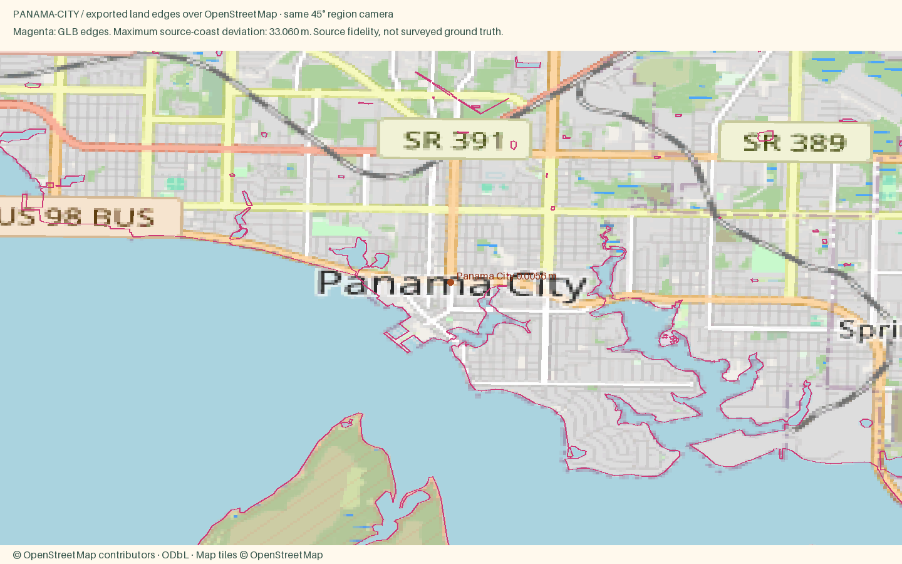

Panama City
Open atlas · Accuracy CSV · Sourced medians
Region
Panama City
Open districtA bayfront city on St. Andrews Bay with a reviving downtown and the Gulf beaches a bridge away.
Source alignment

Manual fixes
- City-specific package requested by user; other cities in the parent region remain unchanged.
- Expanded the dated OSM building acquisition westward to cover the requested waterfront and neighborhoods; shared exporter unchanged.
- Historic residential pitched roofs and painted wood are separated from the low downtown commercial blocks.
- Downtown marina is shown from mapped geometry, not represented as fully operational; city reports continuing revitalization.
- Expanded southern acquisition extent to retain the complete Shell Island coastline; no shoreline vertices removed.
- Input camera fitted to both geographic axes; Census background context extended to cover the wider region frame. Geometry and style implementation unchanged.
Landing export comparison
Town context and Street close view use the same hero point. Compare both zooms · Town phone crop · Street phone crop